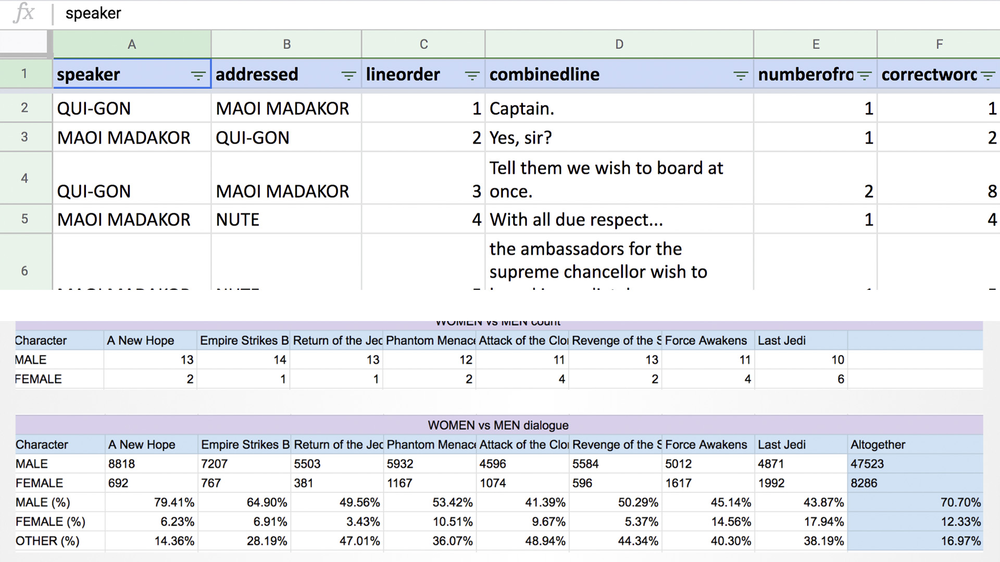

Boards made in Adobe XD show initial mid-fidelity mock-ups (Swetha Kannan / Los Angeles Times)

We spent hours figuring out which characters spoke the most and thus needed to be included on the page (Swetha Kannan / Los Angeles Times)
The basic flow of this project was first creating a purpose for our information - why exactly were we creating data based on words spoken? Is it fair to use this as a measure for Rey's worth in the trilogy? Afterall, there are different variables that can affect how much a character speaks. To explain this, a good structure to the peace was imperative - starting from a wider view of the star wars universe in general, to just the women, and finally, to Rey herself. Our staff writer, Tracy Brown was able to smoothly write this story in a way that made everything come together seamlessly.
Reporting this project was a monumental team effort. I worked on a 3-person team and we each took a turn re-watching all 8 movies of the Star Wars films. As we watched, we fact-checked the scripts we had for each movie, counted each beep and boop R2D2 and other robots made and counted all of Chewie's groans. As we worked we faced important questions that required serious decision-making: When do we count Anakin's lines as his own and when do we count it as Darth Vader? Should Padme's lines be attributed to her even if it is Sabe, dressed as the queen, actually speaking?
We needed a good way to represent each character in our design (because a huge visualiation we intended to create was a relationship graph which showed almost 50+ characters) and thus decided to draw them ourselves. We went through a series of mid-fidelity design mock-ups before we landed on what was eventually published.